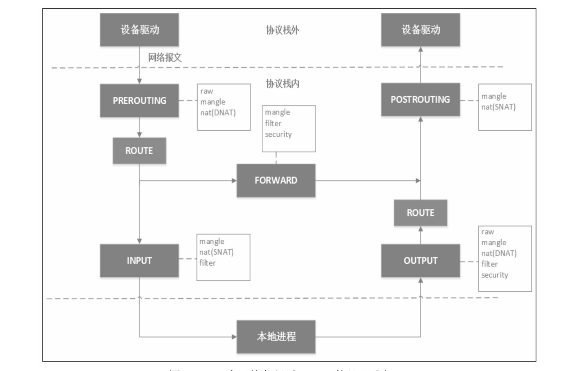
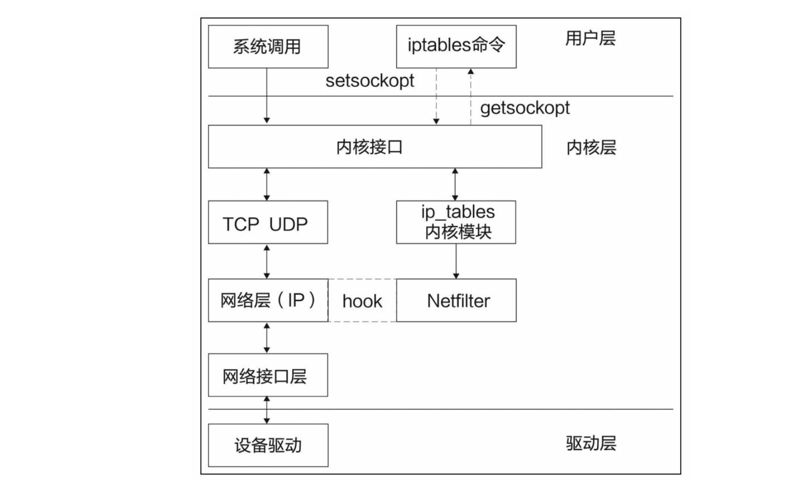

netfilter
iptables的底层实现是netfilter。netfilter是Linux内核2.4版引入的一个子系统，作为一个通用的、抽象的框架，提供一整套hook函数的管理机制，使得数据包过 滤、包处理(设置标志位、修改TTL等)、地址伪装、网络地址转换、透明代理、访问控制、基于协议类型的连接跟踪，甚至带宽限速等功能成为可能。netfilter的架构就是在整个网络流程的若干位置放置一些钩子，并在每 个钩子上挂载一些处理函数进行处理。 IP层的5个钩子点的位置，对应iptables就是5条内置链，分别是 PREROUTING、POSTROUTING、INPUT、OUTPUT和FORWARD。 netfilter原理图:
当网卡上收到一个包送达协议栈时，最先经过的netfilter钩子是 PREROUTING，如果确实有用户埋了这个钩子函数，那么内核将在这里对 数据包进行目的地址转换(DNAT)。不管在PREROUTING有没有做过 DNAT，内核都会通过查本地路由表决定这个数据包是发送给本地进程还是 发送给其他机器。如果是发送给其他机器(或其他network namespace)，就 相当于把本地当作路由器，就会经过netfilter的FORWARD钩子，用户可以 在此处设置包过滤钩子函数，例如iptables的reject函数。所有马上要发到协 议栈外的包都会经过POSTROUTING钩子，用户可以在这里埋下源地址转换 (SNAT)或源地址伪装(Masquerade，简称Masq)的钩子函数。如果经过 上面的路由决策，内核决定把包发给本地进程，就会经过INPUT钩子。本地 进程收到数据包后，回程报文会先经过OUTPUT钩子，然后经过一次路由决 策(例如，决定从机器的哪块网卡出去，下一跳地址是多少等)，最后出协议栈的网络包同样会经过POSTROUTING钩子。
iptables的三板斧:table、chain和rule
iptables是用户空间的一个程序，通过netlink和内核的netfilter框架打交 道，负责往钩子上配置回调函数。iptables的工作原理图：
我们常说的iptables 5X5，即5张表(table)和5条链(chain)。5条链即iptables的5条内置链，对应上文介绍的netfilter的5个钩子。这5条链分别是:
INPUT链:一般用于处理输入本地进程的数据包;
OUTPUT链:一般用于处理本地进程的输出数据包;
FORWARD链:一般用于处理转发到其他机器/network namespace的数 据包;
PREROUTING链:可以在此处进行DNAT;
POSTROUTING链:可以在此处进行SNAT。
除了系统预定义的5条iptables链，用户还可以在表中定义自己的链。
5张表如下所示：
这5张表的优先级从高到低是:raw、mangle、nat、filter、security。需要注意的是，iptables不支持用户自定义表。
不是每个链上都能挂表，iptables表与链的对应关系如下：
| PREROUTING | POSTROUTING | FORWARD | INPUT | OUTPUT |
raw | 👌 | ❌ | ❌ | ❌ | 👌 |
mangle | 👌 | 👌 | 👌 | 👌 | 👌 |
nat(SNAT) | ❌ | 👌 | ❌ | 👌 | ❌ |
nat(DNAT) | 👌 | ❌ | ❌ | ❌ | 👌 |
filter | ❌ | ❌ | 👌 | 👌 | 👌 |
security | ❌ | ❌ | 👌 | 👌 | 👌 |
一个包经过iptables的处理路径
数据匹配包后的常见动作
DROP:直接将数据包丢弃，不再进行后续的处理。应用场景是不让某个数据源意识到你的系统的存在，可以用来模拟宕机;
REJECT:给客户端返回一个connection refused或destination unreachable 报文。应用场景是不让某个数据源访问你的系统，善意地告诉他:我这里没 有你要的服务内容;
QUEUE:将数据包放入用户空间的队列，供用户空间的程序处理;
RETURN:跳出当前链，该链里后续的规则不再执行;
ACCEPT:同意数据包通过，继续执行后续的规则;
JUMP:跳转到其他用户自定义的链继续执行。
常规使用
查看iptables规则
查看所有的iptables规则(严格地说，输出是iptables的filter表的所有规则)
iptables -L -n
输出nat表的所有规则
iptables -t nat -L -n
使用-n选项将以数字形式列出信息，即将域名解析成IP地址。想输出更详细的信息，例如，经过某条rule处理的数据包字节、进出网口等信息，可 以使用-v选项。
iptables遍历规则

配置内置链的默认策略
# 默认的不让进 iptables --policy INPUT DROP # 默认的不允许转发 iptables --policy FORWARD DROP # 默认的可以出去 iptables --policy OUTPUT ACCEPT
配置防火墙规则策略
配置允许ssh连接
iptables -A INPUT -s 10.20.30.40/24 -p tcp --dport 22 -j ACCEPT
- A INPUT ：表示这条挂在INPUT链上
-s 10.20.30.40/24：表示允许源 (source)地址是10.20.30.40/24这个网段的连接
-p tcp：表示允许 TCP(protocol)包通过
--dport 22：允许访问的目的端口 (destination port)为22，即SSH端口
-j ACCEPT：表示接受这样的连接
阻止来自某个IP/网段的所有连接
# 如果要阻止10.10.10.10上所有的包，则可以使用以下命令 iptables -A INPUT -s 10.10.10.10 -j DROP
封锁端口
# 要阻止本地1234端口建立对外连接，可以使用以下命令： iptables -A OUTPUT -p tcp --dport 1234 -j DROP
注意，我们要在OUTPUT链上挂规则是因为我们的需求是屏蔽本地进程 对外的连接。如果我们要阻止外部连接访问本地1234端口，就需要在INPUT 链上挂规则，命令如下:
iptables -A INPUT -p tcp --dport 1234 -j DROP
端口转发
iptables -t nat -A PREROUTING -i eth0 -p tcp --dport 80 -j REDIRECT --to-port 8080
禁用ping
iptables -A INPUT -p icmp -j DROP
删除规则
iptables -F # 清除指定表 iptables -t nat -F # 删除某条规则,-D iptables -D INPUT -s 10.10.10.10 -j DROP # 当某条链上的规则被全部清除变成空链后，可以使用-X参数删除,内置链无法删除 iptables -X FOO # 创建自定义链 iptables -N BAR
DANT
DNAT根据指定条件修改数据包的目标IP地址和目标端口。DNA T的原 理和我们上文讨论的端口转发原理差不多，差别是端口转发不修改IP地址。
iptables -t nat -A PREROUTING -d 1.2.3.4 -p tcp --dport 80 -j DNAT --to-destination 10.20.30.40:8080
如果要匹配网卡，可以用-i eth0 (i:input)指定收到包的网卡，DNAT只发生在nat表的PREROUTING链，这也是我们要指定收到包的网卡而不是发出包的网卡的原因。
注意：当涉及转发的目的IP地址是外机时，需要确保启用ip forward功能，即把Linux当交换机用
echo 1 > /proc/sys/net/ipv4/ip_forward
SANT/网络地址欺骗
神秘的网络地址欺骗其实是SNA T的一种。SNA T根据指定条件修改数 据包的源IP地址，即DNA T的逆操作。与DNAT的限制类似，SNAT策略只 能发生在nat表的POSTROUTING链。
iptables -t nat -A POSTROUTING -s 192.168.1.2 -j SNAT --to-source 10.172.16.1
与DNAT 类似，我们也可以匹配发包的网卡，例如-o eth0 (o:output)
至于网络地址伪装，其实就是一种特殊的源地址转换，报文从哪个网卡 出就用该网卡上的IP地址替换该报文的源地址，具体用哪个IP地址由内核决 定。下面这条规则的意思是:源地址是10.8.0.0/16的报文都做一次Masq。
iptables -t nat -A POSTROUTING -s 10.8.0.0/16 -j MASQUERADE
与SNAT类似，如果要控制被替换的源地址，则可以指定匹配从哪块网 卡发出报文。例如:-o eth0选项指定报文从eth0出去并使用eth0的IP地址做 源地址伪装。
保存与恢复
永久保存上面更改，并打印所有规则
iptables-save
备份和恢复规则
# 备份 iptables-save > iptables.bak # 恢复 iptables-restore < iptables.bak